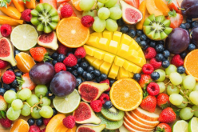
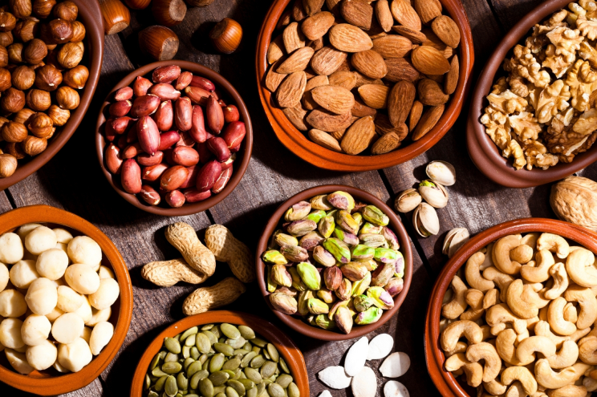
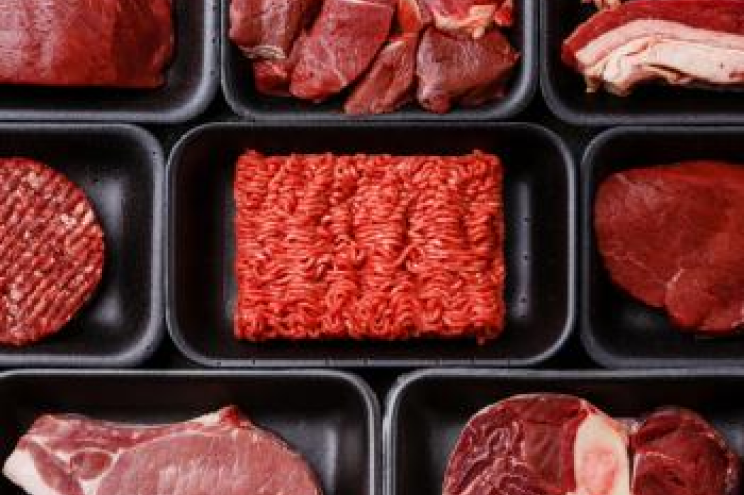
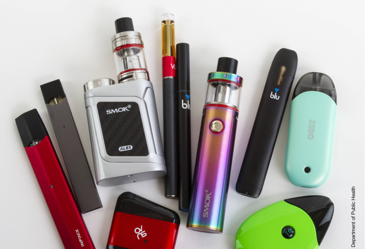

<!DOCTYPE html>
 <html lang="en">
<head>
    <title>HerHeart</title>
    <meta name="viewport" content="width=device-width"/>
    <meta charset="UTF-8"> <!-- This is to include emojis -->
    <script src="https://unpkg.com/jquery"></script>
    <script src="https://unpkg.com/survey-jquery@1.9.8/survey.jquery.min.js"></script>
    <link href="https://unpkg.com/survey-core@1.9.8/modern.min.css" type="text/css" rel="stylesheet"/>
    <script src="https://unpkg.com/nouislider@9.2.0/distribute/nouislider.js"></script>
    <script src="https://unpkg.com/wnumb@1.1.0"></script>
    <link href="https://unpkg.com/nouislider@9.2.0/distribute/nouislider.min.css" rel="stylesheet"/>
    <!-- Font -->
    <link rel="preconnect" href="https://fonts.googleapis.com">
    <link rel="preconnect" href="https://fonts.gstatic.com" crossorigin>
    <link href="https://fonts.googleapis.com/css2?family=Comic+Neue:wght@300;400&display=swap" rel="stylesheet"> 
    <script src="https://unpkg.com/surveyjs-widgets@1.9.8/surveyjs-widgets.min.js"></script>
    <script async src="https://www.tiktok.com/embed.js"></script>
    <script src="https://cdn.jsdelivr.net/npm/p5@1.4.1/lib/p5.js"></script>

    <script>
        (function(apiKey){
            (function(p,e,n,d,o){var v,w,x,y,z;o=p[d]=p[d]||{};o._q=o._q||[];
            v=['initialize','identify','updateOptions','pageLoad','track'];for(w=0,x=v.length;w<x;++w)(function(m){
                o[m]=o[m]||function(){o._q[m===v[0]?'unshift':'push']([m].concat([].slice.call(arguments,0)));};})(v[w]);
                y=e.createElement(n);y.async=!0;y.src='https://cdn.pendo.io/agent/static/'+apiKey+'/pendo.js';
                z=e.getElementsByTagName(n)[0];z.parentNode.insertBefore(y,z);})(window,document,'script','pendo');
        })('0fbbcd9f-9784-4cd9-5cc2-356ca53ac8b8');
        
        // in your authentication promise handler or callback
    pendo.initialize({
        visitor: {
            id:              ''   // Required if user is logged in
            // email:        // Recommended if using Pendo Feedback, or NPS Email
            // full_name:    // Recommended if using Pendo Feedback
            // role:         // Optional

            // You can add any additional visitor level key-values here,
            // as long as it's not one of the above reserved names.
        },

        account: {
            id:           '' // Required if using Pendo Feedback
            // name:         // Optional
            // is_paying:    // Recommended if using Pendo Feedback
            // monthly_value:// Recommended if using Pendo Feedback
            // planLevel:    // Optional
            // planPrice:    // Optional
            // creationDate: // Optional

            // You can add any additional account level key-values here,
            // as long as it's not one of the above reserved names.
        }
    });
        
        </script>

</head>
<body>
<div id="surveyElement" style="display:inline-block;width:100%;"></div>
<div id="surveyResult"></div>
<div class="modal-body">
    <!-- An element that displays a survey element's 'popupdescription' property value-->
    <p>
        <div id="questionDescriptionText"></div>
    </p>
</div>


<script>

    Survey
        .Serializer
        .addProperty("page", "animated:text");

    Survey
        .Serializer
        .addProperty("page", "popupdescription:text");

    Survey
        .Serializer
        .addProperty("page", "pos:number");

    function showDescription(element) {
        document
            .getElementById("questionDescriptionText")
            .innerHTML = element.popupdescription;
        $("#questionDescriptionPopup").modal();
    }

    var newAnimation;
    var oldAnimation;
    var animationValues = new Array(9);
    var animationValuesHealthy = new Array(9);
    var goodFeedbackResponse = ["empty","Yea! That's the exercise you need every week!","Yaaa fruits and veggies make your heart healthy!","Yea nuts are awesome, they impact your health in such a beneficial way!!","","","Keep 'em grains coming!","This is great! See how much NOT smoking has helped your score, smoking is a HUGE factor in your heart health"];
    var mediumFeedbackResponse = ["empty","","","Nuts are great! They can help your heart even more than fruit","","","","As you can probably guess, smoking is not too good for your heart, but because you stopped it means your heart is healing!"];
    var badFeedbackResponse = ["empty","","","Nuts are great! They can help your heart even more than fruit at times","Eehhh that much soda is not good for your heart!","Uuuhh a lot of red meat! Too much meat is actually bad for your heart...","","","Smoking any nicotine is one of the biggest factors in reducing your risk of cardiac disease! You know that 60% of teenagers your age don't smoke, if your group of friends smokes you could try to use non-nicotine products for example!"];

    // Static variables
    var rawSport = 0;
    var rawFruits = 0;
    var rawNuts = 0;
    var rawSoda = 0;
    var rawGrains = 0;
    var rawMeat = 0;
    var rawSmoke = 0;
    var rawAlcohol = 0;

    const json = {
        "title": "HerHeart",
        "showProgressBar": "top",
        "goNextPageAutomatic": true,
    // "triggers": [
    //     {
    //         "type": "complete"
    //         "expression": "{gender} != 'Female'"
    //     }
    // ],
        "pages": [
            {
                "elements": [
                    {
                        "type":"html",
                        "name": "Intro",
                        "html":"<h2 style='text-align:center'> Tell us what you eat every week and we'll tell you how healthy your heart is</h2><br>"+
                        // "<p>Not smoking, a healthy weight, a nutritious diet, and daily exercise play important roles in the prevention of cardiovascular disease. In fact, an overall healthy lifestyle may prevent more than 75% of deaths due to cardiovascular disease. Take this quiz to evaluate how your current lifestyle habits affect your cardiovascular health, and discover simple steps you can take to incorporate a Heart Healthy lifestyle into everyday living. Knowledge is power. Take the first step towards protecting your heart and your health!</p>"+ 
                        "<br><p><b>Press Next to begin this quiz.</b></p>"
                    },
                    {
                        "name": "ID",
                        "type": "text",
                        "title": "Please enter your study ID:",
                        "placeHolder": "For example, 8",
                        "isRequired": true,
                        "autoComplete": "name"
                    }
                ]
            },{
                "popupdescription":"P5",
                "pos": 1,
                "elements": [
                    {
                        "type": "html",
                        "name": "test",
                        "html": "<div id='sketch-holder'></div>"
                    },
                    // {
                    //     "type": "image",
                    //     "name": "first_page_image",
                    //     "imageLink": "./img/vigorous.png",
                    //     "imageWidth": "300px",
                    //     "imageHeight": "300px"
                    // },
                    {
                        "type": "radiogroup",
                        "name": "activity-hard",
                        "title": "During a typical week how often do you practice any physical activity where you breathe hard/sweat?",
                        "isRequired": true,
                        "colCount": 0,
                        "hasNone": false,
                        "choices": [
                            "< 15 mins",
                            "15 - 30 mins",
                            "30 - 60 mins",
                            "1 - 3 hrs",
                            "3 - 6 hrs",
                            "6 - 10 hrs",
                            "10+ hrs"
                        ]
                    }
                ]
            },{
                "popupdescription":"P5",
                "pos": 1,
                "elements": [
                    {
                        "type": "html",
                        "name": "test",
                        "html": "<div id='sketch-holder'></div>"
                    },
                    // {
                    //     "type": "image",
                    //     "name": "first_page_image",
                    //     "imageLink": "./img/moderate.png",
                    //     "imageWidth": "300px",
                    //     "imageHeight": "300px"
                    // },
                    {
                        "type": "radiogroup",
                        "name": "activity-mod",
                        "title": "Okay that's great! And how often do you practice any physical activity where you exert some effort?",
                        "isRequired": true,
                        "colCount": 0,
                        "hasNone": false,
                        "choices": [
                            "< 15 mins",
                            "15 - 30 mins",
                            "30 - 60 mins",
                            "1 - 3 hrs",
                            "3 - 6 hrs",
                            "6 - 10 hrs",
                            "10+ hrs"
                        ]
                    }
                ]
            },{
                "popupdescription":"P5",
                "animated":"yes",
                "pos" : 1,
                "elements": [
                    {
                        "type": "html",
                        "name": "activity-score",
                        "html": "<div id='sketch-holder'></div><h3 style='text-align:center'>Yea! That's the exercise you need every week!</h3>"
                    }
                ]
            },{
                "popupdescription":"P5",
                "pos": 2,
                "elements": [
                {
                        "type": "html",
                        "name": "test",
                        "html": "<div id='sketch-holder'></div>"
                    },
                    // {
                    //     "type": "image",
                    //     "name": "second_page_image",
                    //     "imageLink": "./img/fruits.png",
                    //     "imageWidth": "300px",
                    //     "imageHeight": "300px"
                    // },
                    {
                        "type": "radiogroup",
                        "name": "fruits",
                        "title": "During a typical week how often do you have one piece of fruit?",
                        "isRequired": true,
                        "colCount": 0,
                        "hasNone": false,
                        "choices": [
                            "Never",
                            "Less than once a week",
                            "Once or twice a week",
                            "Three to five times a week",
                            "Everyday",
                            "Twice a day",
                            "More than twice a day",
                        ]
                    }
                ]
            },
            // {
            //     "popupdescription":"P5",
            //     "pos": 2,
            //     "elements": [
            //     {
            //             "type": "html",
            //             "name": "test",
            //             "html": "<div id='sketch-holder'></div>"
            //         },
            //         {
            //             "type": "image",
            //             "name": "fruit_yes",
            //             "imageLink": "./img/yesfruit.png",
            //             "imageWidth": "300px",
            //             "imageHeight": "300px",
            //             "visibleIf": "{fruits}='Twice a day'",
            //         },
            //         {
            //             "type": "image",
            //             "name": "fruit_no",
            //             "imageLink": "./img/nofruit.png",
            //             "imageWidth": "300px",
            //             "imageHeight": "300px",
            //             "visibleIf": "{fruits}='Less than once a week'",
            //         },
            //     ]
            // },
            {
                "popupdescription":"P5",
                "pos": 2,
                "elements": [
                {
                        "type": "html",
                        "name": "test",
                        "html": "<div id='sketch-holder'></div>"
                    },
                    {
                        "type": "radiogroup",
                        "name": "vegetables",
                        "title": "Fruit is great! And what about veggies?",
                        "isRequired": true,
                        "colCount": 0,
                        "hasNone": false,
                        "choices": [
                            "Never",
                            "Less than once a week",
                            "Once or twice a week",
                            "Three to five times a week",
                            "Everyday",
                            "Twice a day",
                            "More than twice a day",
                        ]
                    }
                ]
            },{
                "popupdescription":"P5",
                "animated":"yes",
                "pos" : 2,
                "elements": [
                    {
                        "type": "html",
                        "name": "fruit-score",
                        "html": "<div id='sketch-holder'></div><h3 style='text-align:center'>Yaaa fruits and veggies make your heart healthy!</h3>"
                    }
                ]
            },{
                "popupdescription":"P5",
                "pos": 3,
                "elements": [
                    {
                        "type": "html",
                        "name": "test",
                        "html": "<div id='sketch-holder'></div>"
                    },
                    // {
                    //     "type": "image",
                    //     "name": "second_page_image",
                    //     "imageLink": "./img/nuts.png",
                    //     "imageWidth": "300px",
                    //     "imageHeight": "300px"
                    // },
                    {
                        "type": "radiogroup",
                        "name": "nuts",
                        "title": "During a typical week how often do you eat a handful of nuts?",
                        "isRequired": true,
                        "colCount": 0,
                        "hasNone": false,
                        "choices": [
                            "Never",
                            "Less than once a week",
                            "Once or twice a week",
                            "Three to five times a week",
                            "Everyday",
                            "Twice a day",
                            "More than twice a day",
                        ]
                    }
                ]
            },{
                "popupdescription":"P5",
                "animated":"yes",
                "pos" : 3,
                "elements": [
                    {
                        "type": "html",
                        "name": "nut-score",
                        "html": "<div id='sketch-holder'></div><h3 style='text-align:center'>Yea nuts are awesome!!</h3>"
                    }
                ]
            },{
                "popupdescription":"P5",
                "pos": 4,
                "elements": [
                {
                        "type": "html",
                        "name": "test",
                        "html": "<div id='sketch-holder'></div>"
                    
                    },
                    // {
                    //     "type": "image",
                    //     "name": "second_page_image",
                    //     "imageLink": "./img/soda.png",
                    //     "imageWidth": "300px",
                    //     "imageHeight": "300px"
                    // },
                    {
                        "type": "radiogroup",
                        "name": "sugar",
                        "title": "During a typical week how often do you have 1 can/bottle of soda?",
                        "isRequired": true,
                        "colCount": 0,
                        "hasNone": false,
                        "choices": [
                            "Never",
                            "Less than once a week",
                            "Once or twice a week",
                            "Three to five times a week",
                            "Everyday",
                            "Twice a day",
                            "More than twice a day",
                        ]
                    }
                ]
            },{
                "popupdescription":"P5",
                "animated":"yes",
                "pos" : 4,
                "elements": [
                    {
                        "type": "html",
                        "name": "soda-score",
                        "html": "<div id='sketch-holder'></div><h3 style='text-align:center'>Eehhh that much soda is not good for your heart!</h3>"
                    }
                ]
            },{
                "popupdescription":"P5",
                "pos": 5,
                "elements": [
                {
                        "type": "html",
                        "name": "test",
                        "html": "<div id='sketch-holder'></div>"
                    },
                    // {
                    //     "type": "image",
                    //     "name": "meat_image",
                    //     "imageLink": "./img/meats.png",
                    //     "imageWidth": "300px",
                    //     "imageHeight": "300px"
                    // },
                    {
                        "type": "radiogroup",
                        "name": "meat",
                        "title": "During a typical week how often do you eat RED meat? (Red meat includes beef, pork, lamb, goat)",
                        "isRequired": true,
                        "colCount": 0,
                        "hasNone": false,
                        "choices": [
                            "Never",
                            "Less than once a week",
                            "Once or twice a week",
                            "Three to five times a week",
                            "Everyday",
                            "Twice a day",
                            "More than twice a day",
                        ]
                    }
                ]
            },{
                "popupdescription":"P5",
                "pos": 5,
                "elements": [
                {
                        "type": "html",
                        "name": "test",
                        "html": "<div id='sketch-holder'></div>"
                    },
                    // {
                    //     "type": "image",
                    //     "name": "meat_image",
                    //     "imageLink": "./img/procmeats.png",
                    //     "imageWidth": "300px",
                    //     "imageHeight": "300px"
                    // },
                    {
                        "type": "radiogroup",
                        "name": "meatproc",
                        "title": "And how much processed meat do you eat a week? (Processed meat also include deli meats like chicken)?",
                        "isRequired": true,
                        "colCount": 0,
                        "hasNone": false,
                        "choices": [
                            "Never",
                            "Less than once a week",
                            "Once or twice a week",
                            "Three to five times a week",
                            "Everyday",
                            "Twice a day",
                            "More than twice a day",
                        ]
                    }
                ]
            },{
                "popupdescription":"P5",
                "animated":"yes",
                "pos" : 5,
                "elements": [
                    {
                        "type": "html",
                        "name": "meat-score",
                        "html": "<div id='sketch-holder'></div><h3 style='text-align:center'>Uuuhh a lot of red meat! Too much meat is actually bad for your heart...</h3>"
                    }
                ]
            },{
                "popupdescription":"P5",
                "pos": 6,
                "elements": [
                {
                        "type": "html",
                        "name": "test",
                        "html": "<div id='sketch-holder'></div>"
                    },
                    // {
                    //     "type": "image",
                    //     "name": "grains_image",
                    //     "imageLink": "./img/grains-high.png",
                    //     "imageWidth": "300px",
                    //     "imageHeight": "300px"
                    // },
                    {
                        "type": "radiogroup",
                        "name": "grains-high",
                        "title": "During a typical week how often do you have high fiber grains such as these?",
                        "isRequired": true,
                        "colCount": 0,
                        "hasNone": false,
                        "choices": [
                            "Never",
                            "Less than once a week",
                            "Once or twice a week",
                            "Three to five times a week",
                            "Everyday",
                            "Twice a day",
                            "More than twice a day",
                        ]
                    }
                ]
            },{
                "popupdescription":"P5",
                "pos": 6,
                "elements": [
                {
                        "type": "html",
                        "name": "test",
                        "html": "<div id='sketch-holder'></div><div id='sketch-holder'></div>"
                    },
                    {
                        "type": "radiogroup",
                        "name": "grains-low",
                        "title": "Got it, and how about low fiber grains such as these?",
                        "isRequired": true,
                        "colCount": 0,
                        "hasNone": false,
                        "choices": [
                            "Never",
                            "Less than once a week",
                            "Once or twice a week",
                            "Three to five times a week",
                            "Everyday",
                            "Twice a day",
                            "More than twice a day",
                        ]
                    }
                ]
            },{
                "popupdescription":"P5",
                "animated":"yes",
                "pos" : 6,
                "elements": [
                    {
                        "type": "html",
                        "name": "grain-score",
                        "html": "<div id='sketch-holder'></div><h3 style='text-align:center'>Keep 'em grains coming!</h3>"
                    }
                ]
            },{
                "popupdescription":"P5",
                "pos": 7,
                "elements": [
                {
                        "type": "html",
                        "name": "test",
                        "html": "<div id='sketch-holder'></div><div id='sketch-holder'></div>"
                    },
                    {
                        "type": "radiogroup",
                        "name": "smoke",
                        "title": "Do you smoke cigarrettes, use smokeless tobacco, or vape pens containing nicotine?",
                        "isRequired": true,
                        "colCount": 0,
                        "hasNone": false,
                        "choices": [
                            "Never smoked",
                            "Used to smoke",
                            "Currently smoke"
                        ]
                    }
                ]
            },{
                "popupdescription":"P5",
                "animated":"yes",
                "pos" : 7,
                "elements": [
                    {
                        "type": "html",
                        "name": "smoke-score",
                        "html": "<div id='sketch-holder'></div><h3 style='text-align:center'>As you can probably guess, smoking is not too good for your heart, but because you stopped it means your heart is healing!</h3>"
                    }
                ]
            },{
                "elements": [
                    {
                        "name": "age",
                        "type": "text",
                        "inputType": "number",
                        "title": "Alright, now easy ones. How old are you?",
                        "placeholder": "15",
                        "isRequired": true
                    }
                ]
            },{
                "popupdescription":"P5",
                "pos": 8,
                "elements": [
                {
                        "type": "html",
                        "name": "test",
                        "html": "<div id='sketch-holder'></div>",
                        "visibleIf": "{age}>=21"
                    },
                    {
                        "type": "radiogroup",
                        "name": "alcohol",
                        "title": "Oh! You are 21+, let me ask you then, how often do you drink one glass of alcohol? One glass = 4 ounces of wine, 12 ounces of beer",
                        "visibleIf": "{age}>=21",
                        "isRequired": true,
                        "colCount": 0,
                        "hasNone": false,
                        "choices": [
                            "Never",
                            "Less than once a week",
                            "Once or twice a week",
                            "Three to five times a week",
                            "Everyday",
                            "Twice a day",
                            "More than twice a day",
                        ]
                    }
                ]
            },{
                "popupdescription":"P5",
                "animated":"yes",
                "pos" : 8,
                "elements": [
                    {
                        "type": "html",
                        "name": "test",
                        "html": "<div id='sketch-holder'></div><h3 style='text-align:center'>Gotcha! You may know this but one glass of wine a day is actually beneficial to your heart health, just one though 👀</h3>",
                        "visibleIf": "{age}>=21"
                    }
                ]
            },{
                "elements": [
                    {
                        "type": "radiogroup",
                        "name": "gender",
                        "title": "What is your gender?",
                        "isRequired": true,
                        "colCount": 0,
                        "hasNone": false,
                        "choices": [
                            "Female",
                            "Male",
                            "Transgender female",
                            "Transgender male",
                            "Non-gender binary"
                        ]
                    }
                ]
            },{ // This question needs logic for people that accidentally put too much or too little
                "elements": [
                    {
                        "name": "weight",
                        "type": "text",
                        "inputType": "number",
                        "placeholder": "130",
                        "title": "How much do you weigh? (in pounds)",
                        "isRequired": true
                    }
                ]
            },{
                "elements": [
                    {
                        "type": "html",
                        "name": "Height",
                        "html": "<p><b>How tall are you?</b></p>"
                    },
                    {
                        "name": "height-feet",
                        "type": "text",
                        "inputType": "number",
                        "placeholder": "4",
                        "title": "Feet",
                        "isRequired": true
                    },
                    {
                        "name": "height-inches",
                        "type": "text",
                        "inputType": "number",
                        "placeholder": "7",
                        "title": "Inches",
                        "isRequired": true
                    }
                ]
            },{
                "elements": [
                    {
                        "type": "html",
                        "name": "pre-summary",
                        "html": "<div><center><h3 style='margin:auto;'>You are done! Tap Next to see your score</h3></center></div>"
                    }
                    // ,{
                    //     "type": "html",
                    //     "name": "recommendations",
                    //     "html": "<div style='display: flex; justify-content: space-around'><a href=''style='padding:13px 15px 13px 15px; background-color: rgba(47, 136, 236, 0.733); color: white; border-radius: 8px; font-size: medium;'>Read some recomendations</a></div>"
                    // }
                ]
            },{
                "popupdescription":"P5",
                "pos" : 8,
                "elements": [
                    {
                        "type": "html",
                        "name": "summary",
                        "html": "<div style=' border-radius: 25px; padding: 20px; background-image: linear-gradient(0deg,  rgb(231, 206, 61),rgb(211, 159, 16));width:75%; margin:auto;'><center><p style='margin:auto;'>Your risk is <h3></h3>Compared to a healthy lifestyle</p></center></div>"
                    }
                    // ,{
                    //     "type": "html",
                    //     "name": "recommendations",
                    //     "html": "<div style='display: flex; justify-content: space-around'><a href=''style='padding:13px 15px 13px 15px; background-color: rgba(47, 136, 236, 0.733); color: white; border-radius: 8px; font-size: medium;'>Read some recomendations</a></div>"
                    // }
                ]
            },{
                "elements": [
                    {
                        "type": "html",
                        "name": "good-foods",
                        "html": ""
                    }
                ]
            },{
                "elements": [
                    {
                        "type": "html",
                        "name": "bad-foods",
                        "html": ""
                    }
                ]
            },{
                "elements": [
                    {
                        "type": "html",
                        "name": "activities",
                        "html": ""
                    }
                ]
            },{
                "elements": [
                    {
                        "type": "html",
                        "name": "smokinghabits",
                        "html": "",
                        "visibleIf": "{smoke}!='Never smoke'",
                    }
                ]
            },
        ]
    };

    Survey
        .StylesManager
        .applyTheme("modern");

    window.survey = new Survey.Model(json);

    survey
        .onComplete
        .add(function (sender) {
            document
                .querySelector('#surveyResult')
                .textContent = "Result JSON:\n" + JSON.stringify(sender.data, null, 3);
        });


    $("#surveyElement").Survey({model: survey});

    survey
    .onAfterRenderPage
    .add(function (survey, options) {
        //Do nothing if a page contains no description to show in a modal popup
        if (!options.page.popupdescription) 
            return;
        
        // Add a P5 Element
        function defineSketch(x,y,value,total,colorDisplay,healthyPoints,animate){
            return function mySketch(p){
            // P5
                let draft, ready, i, maxvalue, minvalue, j, jfac, w;
                var start,current;
                var flag;
                let font, fontsize = 20;
                let colorScore, colorParticles;
                // let song;
                let system;
                p.preload = function preload() {
                    ready = p.loadImage("img/scorebar-full.png");
                    draft = p.loadImage("img/scorebar-empty.png");
                    font = p.loadFont('assets/PartyConfettiRegular-eZOn3.ttf');
                }
                p.setup = function setup() {
                    let canvas;
                    if(animate == 1){canvas = p.createCanvas(350, 300);}
                    else {canvas = p.createCanvas(350, 100);}
                    // let canvas = p.createCanvas(350, 100);
                    canvas.parent('sketch-holder');
                    p.image(ready, 60, 20);p.image(draft, 60, 20);
                    // song = p.loadSound('assets/goodSound.mp3');
                    minvalue = x;maxvalue = y;
                    i = minvalue-0.5;
                    j = parseInt(maxvalue/1.35*5-minvalue/1.35*5);
                    jfac = Math.round(j/(maxvalue-minvalue));
                    w = 0;
                    console.log("What is max",maxvalue);
                    console.log("what is min",minvalue);
                    console.log("whatis jfac",jfac);
                    console.log("what is j",j);
                    flag = 0;
                    p.textFont(font);p.textAlign(p.CENTER,p.CENTER);
                    if(colorDisplay == 'red'){colorScore = p.color(190, 107, 60); colorParticles = [190,107,60];} 
                    else if(colorDisplay == 'yellow'){colorScore = p.color(188, 164, 34);colorParticles = [168,164,34];} 
                    else if(colorDisplay == 'green'){colorScore = p.color(60, 190, 175);colorParticles = [60,190,175];} 
                    else {colorScore = p.color(0, 0, 0);}
                    system = new ParticleSystem(p.createVector(p.width / 2, 100));
                }

                p.draw = function draw() {
                    if (animate == 1){
                        p.fillBar();
                    } else {
                        p.staticBar();
                    }
                    p.textAlign(p.RIGHT);
                    p.drawWords(p.width * 0.1);
                }

                p.fillBar = function fillBar(){
                    if (i < maxvalue){
                        p.background(255);
                        p.image(draft, 60, 20);
                        p.copy(ready, 0, 0, i, 40, 60, 20, i, 40);
                        i = i+1;
                        j = j-jfac;
                        // p.text(i, 40, 30);
                        // This can be put here as a delay for the whole animation, but it slows down the rendering of the covered object too much
                        // if(flag == 0){
                            // p.wait(500);
                            // flag = 1;
                        // }
                        // p.background(51);
                        system.addParticle();
                        system.run();
                    } else {
                        p.drawScore();
                        j = 0;
                        // if (song.isPlaying()) {song.stop();} 
                        // else {song.play();}
                    }
                }

                p.staticBar = function staticBar(){
                    // i = minvalue+0.5; // Define the minimum value as 0.5 less so that it becomes exactly that value
                    if (flag == 0){
                        if (i <= minvalue){
                            p.copy(ready, 0, 0, i, 40, 60, 20, i, 40);
                        } else {
                            flag = 1;
                            // p.drawScore();
                        }
                        i = i+0.5;                        
                    }
                }

                p.drawWords = function drawWords(x) {
                    // The text() function needs three parameters:
                    // the text to draw, the horizontal position,
                    // and the vertical position
                    // p.fill(0);
                    p.fill(0);
                    p.textSize(20);
                    if(animate == 1){p.text(total-j, 40, 30);} 
                    else {p.text(total, 40, 30);}
                    p.text('Your Score',99,10);
                }

                p.drawScore = function drawScore(){
                    // Only running one time, next time not displaying
                    p.background(255);
                    p.image(draft, 60, 20);
                    system.addParticle();
                    system.run();
                    p.copy(ready, 0, 0, i, 40, 60, 20, i, 40);

                    p.fill(colorScore);
                    p.textSize(40);
                    p.text("+"+value, 160, 100);
                    p.text('/',150+30,105);
                    p.text(healthyPoints,160+80,110);
                }

                // Waiting function
                p.wait = function wait(time)
                {
                    start = p.millis()
                    do
                    {
                        current = p.millis();
                    }
                    while(current < start + time)
                }

                // A simple Particle class
                
                let Particle = function(position) {
                    this.acceleration = p.createVector(0, 0.05);
                    this.velocity = p.createVector(p.random(-5, 5), p.random(-5, 5));
                    this.position = position.copy();
                    this.lifespan = 155;
                };

                Particle.prototype.run = function() {
                    this.update();
                    this.display();
                };

                // Method to update position
                Particle.prototype.update = function(){
                    this.velocity.add(this.acceleration);
                    this.position.add(this.velocity);
                    this.lifespan -= 2;
                };

                // Method to display
                Particle.prototype.display = function() {
                    p.stroke(200, this.lifespan);
                    p.strokeWeight(2);
                    p.fill(colorParticles[0],colorParticles[1],colorParticles[2], this.lifespan*2);
                    p.ellipse(this.position.x, this.position.y, 12, 12);
                };

                // Is the particle still useful?
                Particle.prototype.isDead = function(){
                    console.log("Does this fire?");
                    return this.lifespan < 0;
                };

                let ParticleSystem = function(position) {
                    this.origin = position.copy();
                    this.particles = [];
                };

                ParticleSystem.prototype.addParticle = function() {
                    if(i < maxvalue){
                        this.particles.push(new Particle(this.origin));
                        // w++;
                    }
                };

                ParticleSystem.prototype.run = function() {
                    for (let i = this.particles.length-1; i >= 0; i--) {
                        let par = this.particles[i];
                        par.run();
                        if (par.isDead()) {
                        this.particles.splice(i, 1);
                        }
                    }
                };
                
            }
        };

        function calculateBarProgress(){
            // Sports
            if(rawSport >= 3.5){animationValues[1] = 20;}
            else {animationValues[1] = parseInt((rawSport*20)/3.5);}

            // Fruits & Veggies
            if(rawFruits >= 2){animationValues[2] = animationValues[1]+20;}
            else{animationValues[2] = animationValues[1]+parseInt(rawFruits*10);}

            // Nuts
            if(rawNuts >= 2){animationValues[3] = animationValues[2] + 40;}
            else if(rawNuts >= 0.3){animationValues[3] = animationValues[2] + 20;}
            else {animationValues[3] = animationValues[2] + parseInt((rawNuts*20)/0.5);}

            // Soda
            if(rawSoda > 1){animationValues[4] = animationValues[3]}
            else {animationValues[4] = animationValues[3] + (20 - parseInt(rawSoda*20));}
            // Meat
            if(rawMeat > 2){animationValues[5] = animationValues[4]}
            else {animationValues[5] = animationValues[4] + (20 - parseInt((rawMeat*20)/2));}        
            // Grains
            animationValues[6] = animationValues[5] + parseInt((rawGrains*20)/4);
            
            // Smoke
            animationValues[7] = animationValues[6] + 60-rawSmoke*60;

            // Alcohol
            if (rawAlcohol == 1){animationValues[8] = animationValues[7] + 20}
            else if(rawAlcohol > 1){animationValues[8] = animationValues[7] + 20-parseInt((rawAlcohol*20)/3)}
            else {animationValues[8] = animationValues[7] + parseInt(rawAlcohol*20)}
        }

        // Set up messages for each option : three states, good, medium, bad
        function displayFeedbackMessage(feedbackChosen){
            survey.getQuestionByName("activity-score").html = "<div id='sketch-holder'></div><h3 style='text-align:center'>"+feedbackChosen+"</h3>";
            survey.getQuestionByName("fruit-score").html = "<div id='sketch-holder'></div><h3 style='text-align:center'>"+feedbackChosen+"</h3>";
            survey.getQuestionByName("nut-score").html = "<div id='sketch-holder'></div><h3 style='text-align:center'>"+feedbackChosen+"</h3>";
            survey.getQuestionByName("soda-score").html = "<div id='sketch-holder'></div><h3 style='text-align:center'>"+feedbackChosen+"</h3>";
            survey.getQuestionByName("meat-score").html = "<div id='sketch-holder'></div><h3 style='text-align:center'>"+feedbackChosen+"</h3>";
            survey.getQuestionByName("grain-score").html = "<div id='sketch-holder'></div><h3 style='text-align:center'>"+feedbackChosen+"</h3>";
            survey.getQuestionByName("smoke-score").html = "<div id='sketch-holder'></div><h3 style='text-align:center'>"+feedbackChosen+"</h3>";
        }

        calculateBarProgress();

        animationValues[0] = 0;
        // animationValues[1] = 20;
        // animationValues[2] = 20 + 20;
        // animationValues[3] = 20 + 20 + 40;
        // animationValues[4] = 20 + 20 + 40 + 0;
        // animationValues[5] = 20 + 20 + 40 + 0 + 10;
        // animationValues[6] = 20 + 20 + 40 + 0 + 10 + 20;
        // animationValues[7] = 20 + 20 + 40 + 0 + 10 + 20 + 0;
        // animationValues[8] = 20 + 20 + 40 + 0 + 10 + 20 + 0 + 30;
        animationValuesHealthy = [0,20,20,40,20,20,20,60,20]; // Overall quantity amounts to 200 without the alcohol portion that needs to be considered separate

        // I gotta pass in here these variables
        if (options.page.animated) {
            // Remove the previous animation
            if (oldAnimation != null) {
                oldAnimation.remove();
            }

            var colorDisplay;
            if(animationValues[options.page.pos]-animationValues[options.page.pos-1] > animationValuesHealthy[options.page.pos]*0.8){
                colorDisplay = 'green';
                displayFeedbackMessage(goodFeedbackResponse[options.page.pos]);
            }else if(animationValues[options.page.pos]-animationValues[options.page.pos-1] >= animationValuesHealthy[options.page.pos]*0.3 ){
                colorDisplay = 'yellow';
                displayFeedbackMessage(mediumFeedbackResponse[options.page.pos]);
            }else if(animationValues[options.page.pos]-animationValues[options.page.pos-1] < animationValuesHealthy[options.page.pos]*0.3){
                colorDisplay = 'red';
                displayFeedbackMessage(badFeedbackResponse[options.page.pos]);
            }
            var mySketch = defineSketch(animationValues[options.page.pos-1]*1.35,animationValues[options.page.pos]*1.35,(animationValues[options.page.pos]-animationValues[options.page.pos-1])*5,animationValues[options.page.pos]*5,colorDisplay,animationValuesHealthy[options.page.pos]*5,1);
            newAnimation = new p5(mySketch);
            window.sketchInstance = newAnimation;
            // window.sketchInstance = new p5(newAnimation);
            // console.log("this animates");
        } else {
            if (newAnimation != null) {
                newAnimation.remove();
            }

            
            var mySketch2 = defineSketch(animationValues[options.page.pos-1]*1.35,0,(animationValues[options.page.pos]-animationValues[options.page.pos-1])*5,animationValues[options.page.pos-1]*5,'none',0,0);
            
            // var mySketch2 = defineSketch(currentPoints,0,0);
            oldAnimation = new p5(mySketch2);
            // var mySketch2 = defineSketch(currentPoints,0,0);
            window.sketchInstance = oldAnimation;

            // window.sketchInstance = new p5(oldAnimation);
        }

        // P5 End ------------ //
    });

    survey.onValueChanged.add(function (survey, options) {

        // This alone like this just creates the sketch and adds it to all pages
        // var mySketch = defineSketch(10,50);
        // window.sketchInstance = new p5(mySketch);

        var introQ = survey.getQuestionByName("Intro");
        introQ.html = "<div id='myHeart'></div><h2> Tell us what you eat every week and we'll tell you how healthy your heart is</h2><main></main><br><p>Not smoking, a healthy weight, a nutritious diet, and daily exercise play important roles in the prevention of cardiovascular disease. In fact, an overall healthy lifestyle may prevent more than 75% of deaths due to cardiovascular disease. Take this quiz to evaluate how your current lifestyle habits affect your cardiovascular health, and discover simple steps you can take to incorporate a Heart Healthy lifestyle into everyday living. Knowledge is power. Take the first step towards protecting your heart and your health!</p>"+ 
        "<br><p><b>Press Next to begin this quiz.</b></p>";

        var ageQuestion = survey.getQuestionByName("age").value;
        var genderQuestion = survey.getQuestionByName("gender").value;
        //
        var weightQuestion = survey.getQuestionByName("weight").value;
        var heightFeetQuestion = survey.getQuestionByName("height-feet").value;
        var heightInchesQuestion = survey.getQuestionByName("height-inches").value;
        var BMI = (weightQuestion/(heightFeetQuestion*12+heightInchesQuestion)/(heightFeetQuestion*12+heightInchesQuestion))*703;
        //
        var smokeQuestion = survey.getQuestionByName("smoke").value; 
        //
        var alcoholQuestion = survey.getQuestionByName("alcohol").value;
        // 
        var fruitQuestion = survey.getQuestionByName("fruits").value;
        var vegetableQuestion = survey.getQuestionByName("vegetables").value;
        var nutQuestion = survey.getQuestionByName("nuts").value;
        var grainQuestion = survey.getQuestionByName("grains-high").value;
        var grainLowQuestion = survey.getQuestionByName("grains-low").value;
        var sugarQuestion = survey.getQuestionByName("sugar").value;
        var meatQuestion = survey.getQuestionByName("meat").value;
        var procmeatQuestion = survey.getQuestionByName("meatproc").value;
        var fruitVeggieValue = 0;
        var fruitValue = 0;
        var veggieValue = 0;
        var nutValue = 0;
        var grainValue = 0;
        var grainLowValue = 0;
        var sugarValue = 0;
        var meatValue = 0;
        var procmeat = 0;
        var smokeValue = 0;
        var alcoholValue = 0;
        var dietArray = [fruitQuestion,vegetableQuestion,nutQuestion,sugarQuestion,meatQuestion,procmeatQuestion,grainQuestion,grainLowQuestion,alcoholQuestion];
        var dietValues = [0,0,0,0,0,0,0,0,0];
        console.log(dietArray);
        for(i = 0; i < dietArray.length; i++){
            if(dietArray[i]=="More than twice a day"){dietValues[i]=3}
            else if(dietArray[i]=="Twice a day"){dietValues[i]=2}
            else if(dietArray[i]=="Everyday"){dietValues[i]=1}
            else if(dietArray[i]=="Three to five times a week"){dietValues[i]=0.5}
            else if(dietArray[i]=="Once or twice a week"){dietValues[i]=0.3}
            else if(dietArray[i]=="Less than once a week"){dietValues[i]=0.1}
            else if(dietArray[i]=="Never"){dietValues[i]=0}
        }
        rawFruits = dietValues[0]+dietValues[1];
        rawNuts = dietValues[2];
        rawSoda = dietValues[3];
        rawMeat = dietValues[4]+dietValues[5];
        rawGrains = dietValues[6] + dietValues[7]/3;
        rawAlcohol = dietValues[8];

        if (smokeQuestion == "Used to smoke"){smokeValue = 0.15285; rawSmoke = 0.5;}
        else if(smokeQuestion=="Currently smoke"){smokeValue=0.90138; rawSmoke = 1;}
        else {rawSmoke = 0;}

        if (alcoholQuestion=="More than twice a day"){alcoholValue=0.01923*30-0.0004*30*30}
        else if (alcoholQuestion=="Twice a day"){alcoholValue=0.01923*20-0.0004*20*20}
        else if (alcoholQuestion=="Everyday"){alcoholValue=0.01923*10-0.0004*10*10}
        else if (alcoholQuestion=="Three to five times a week"){alcoholValue=0.01923*5-0.0004*5*5};
        

        var fruitVeggieText = "+ 0"; // The value to appear in the prototype tool
        if (fruitQuestion=="More than twice a day" || vegetableQuestion=="More than twice a day"){fruitVeggieValue=0.18283; fruitVeggieText = "+36";}
        else if (fruitQuestion=="Everyday" && vegetableQuestion == "Everyday"){fruitVeggieValue=0.18283; fruitVeggieText = "+36";};

        var nutText = "+ 0";
        if (nutQuestion=="Three to five times a week" || nutQuestion=="Everyday" || nutQuestion=="Once or twice a week"){nutValue=0.14522; nutText = "+29";}
        else if (nutQuestion=="More than twice a day" || nutQuestion=="Twice a day"){nutValue=0.24444; nutText = "+49";};
                
        if (grainQuestion=="More than twice a day"){grainValue=0.03326*3*3}
        else if (grainQuestion=="Twice a day"){grainValue=0.03326*3*2}
        else if (grainQuestion=="Everyday"){grainValue=0.03326*3*1}
        else if (grainQuestion=="Three to five times a week"){grainValue=0.03326*3*0.5}
                
        if (grainLowQuestion=="More than twice a day"){grainLowValue=0.03326*3}
        else if (grainLowQuestion=="Twice a day"){grainLowValue=0.03326*2}
        else if (grainLowQuestion=="Everyday"){grainLowValue=0.03326*1}
        else if (grainLowQuestion=="Three to five times a week"){grainLowValue=0.03326*0.5}
        
        if (sugarQuestion=="More than twice a day"){sugarValue=0.14631*3}
        else if (sugarQuestion=="Twice a day"){sugarValue=0.14631*2}
        else if (sugarQuestion=="Everyday"){sugarValue=0.14631*1}
        else if (sugarQuestion=="Three to five times a week"){sugarValue=0.14631*0.5}
        
        if (meatQuestion=="More than twice a day"){meatValue=0.15624*3}
        else if (meatQuestion=="Twice a day"){meatValue=0.15624*2}
        else if (meatQuestion=="Everyday"){meatValue=0.15624*1}
        else if (meatQuestion=="Three to five times a week"){meatValue=0.15624*0.5}
        var Diet = fruitVeggieValue+nutValue-sugarValue-meatValue+grainValue+grainLowValue;
        //
        var hardSportQuestion = survey.getQuestionByName("activity-hard").value;
        var hardSportValue = 0;
        if(hardSportQuestion=="< 15 mins"){hardSportValue=0.25}
        else if(hardSportQuestion=="15 - 30 mins"){hardSportValue=0.5}
        else if(hardSportQuestion=="30 - 60 mins"){hardSportValue=1}
        else if(hardSportQuestion=="1 - 3 hrs"){hardSportValue=2}
        else if(hardSportQuestion=="3 - 6 hrs"){hardSportValue=4.5}
        else if(hardSportQuestion=="6 - 10 hrs"){hardSportValue=8}
        else if(hardSportQuestion=="10+ hrs"){hardSportValue=10}
        var modSportQuestion = survey.getQuestionByName("activity-mod").value;
        var modSportValue = 0;
        if(modSportQuestion=="< 15 mins"){modSportValue=0.25}
        else if(modSportQuestion=="15 - 30 mins"){modSportValue=0.5}
        else if(modSportQuestion=="30 - 60 mins"){modSportValue=1}
        else if(modSportQuestion=="1 - 3 hrs"){modSportValue=2}
        else if(modSportQuestion=="3 - 6 hrs"){modSportValue=4.5}
        else if(modSportQuestion=="6 - 10 hrs"){modSportValue=8}
        else if(modSportQuestion=="10+ hrs"){modSportValue=10}
        rawSport = modSportValue+hardSportValue;
        //
        var W = 0;
        var risk = 0;
        if (genderQuestion == "Female"){
            W = 0.10820*ageQuestion+0.04676*BMI+smokeValue-alcoholValue-0.05113*(Diet*10)-0.02951*(hardSportValue+modSportValue);
            risk = (1-Math.pow(0.9660,Math.exp(W-6.57301)))*100
        } else {
            W = "We not doing boys yet";
        }

        var healthyPerson = (1-Math.pow(0.9660,Math.exp((-0.557385+BMI*0.04676+ageQuestion*0.1082)-6.57301)))*100;
        var relativeRisk = risk/healthyPerson;
        var summaryQuestion = survey.getQuestionByName("summary");
        var relativeRiskWord = "";
        var dietImagePath = "";
        var activityImagePath = "";
        var bmiImagePath = "";
        var smokeImagePath = "";
        var summaryColor = "";
        var summaryImage = "";
        // Add image for risks


        //
        if (relativeRisk <= 1.0) {
            relativeRiskWord = "Looking good!";
            summaryColor = "rgb(0, 178, 29),rgb(160, 241, 96))";
            summaryImage = "./img/heart-high.png"; // healthy.gif
        } else if (relativeRisk > 1.0 /* was 1.5 before but confusing for usersy6 */&& relativeRisk < 4){
            relativeRiskWord = "Slightly elevated";
            summaryColor = "rgb(231, 206, 61),rgb(211, 159, 16))";
            summaryImage = "./img/heart-med.png"; // unhealthy.gif
        } else {
            relativeRiskWord = "Very High";
            summaryColor = "rgb(178, 32, 0),rgb(241, 96, 96))";
            summaryImage = "./img/heart-low.png"; // vunhealthy.gif
        }

        // Activity computation
        if (hardSportValue+modSportValue < 1.5){activityImagePath = "./img/bar_red.png";}
        else if (hardSportValue+modSportValue >= 1.5 && hardSportValue+modSportValue < 3.5){activityImagePath = "./img/bar_yellow.png";}
        else {activityImagePath = "./img/bar_green.png";}
        // Diet computation
        if (Diet*10 < 2.0){dietImagePath = "./img/bar_red.png";}
        else if (Diet*10 > 2.0 && Diet*10 < 4.5){dietImagePath = "./img/bar_yellow.png";}
        else {dietImagePath = "./img/bar_green.png";}
        // BMI computation
        if (BMI >= 25 && BMI < 30){bmiImagePath = "./img/bar_yellow.png";}
        else if (BMI >= 18.5 && BMI < 25) { bmiImagePath = "./img/bar_green.png";}
        else {bmiImagePath = "./img/bar_red.png";}
        // Smoke computation
        if (((smokeValue*36)/0.18283).toFixed(0) > 30){smokeImagePath = "./img/bar_red.png";}
        else if (((smokeValue*36)/0.18283).toFixed(0) > 0 && ((smokeValue*36)/0.18283).toFixed(0) <= 30){smokeImagePath = "./img/bar_yellow.png";}
        else {smokeImagePath = "./img/bar_green.png";}

        var summaryQuestion = survey.getQuestionByName("summary");
        var fontComic = "Comic Neue"
        summaryQuestion.html = "<div id='sketch-holder'></div><div><center><center><p style='margin:auto; font-size: 27; font-family: "+fontComic+", cursive;'>Your predicted risk of Cardiac disease is ...</p><br></p></center>"+
            "<p>"+
            "</p><h3>"+relativeRiskWord+"</h3></center><br></div>";
        // "<div style=' border-radius: 25px; padding: 20px; background-image: linear-gradient(0deg,  "+summaryColor+";width:75%; margin:auto;'><center><p style='margin:auto;'>Your risk is <h3>"+relativeRiskWord+"</h3><br> Compared to a healthy lifestyle</p></center></div>"+
        // We'll put the images here of the Diet (2.5 points is the average)
        /*
        "<center><p> This is your score breakdown:</p></center>"+
        "<br><center><p> BMI </p></center>"+
        "<br><center><p> Diet </p></center>"+
        // We'll put the images here for the Activity (1.5 hrs is the average)
        "<br><center><p> Activity </p></center>"+
        "<br><center><p> Smoking </p></center>";
        */

        // Good foods replacement
        // Add logic for what image to show
        // var imageSequence = ["./img/circle_above.png","./img/circle_av.png","./img/circle_below.png","./img/circle_mbelow.png","./img/circle_mmbelow.png"];
        var imageSequence = ["./img/vhealthy-graph.png","./img/healthy-graph.png","./img/unhealthy-graph.png","./img/vunhealthy-graph.png","./img/vvunhealthy-graph.png"];
        
        var sequenceVariable = 0;
        if ((((fruitVeggieValue+nutValue+grainValue+grainLowValue)*1000)/5).toFixed(0) == 0){sequenceVariable=2}else{sequenceVariable = 1}
        var goodFoodsQuestion = survey.getQuestionByName("good-foods");
        goodFoodsQuestion.html = "<h3>Let's look at your diet :</h3> <ul> <li><div> <p>Fruits & Veggies: <span style='color: green;  font-weight: bold;' class='text-orientation-right-css'> +"+((fruitVeggieValue*1000)/5).toFixed(0)+"</span></p></div></li>"+
        /*<p> (You need a least two servings of fruit or veggies a day to help your heart)</p>*/
        "<li><div><p>Nuts: <span style='color:green;  font-weight: bold;' class='text-orientation-right-css'> + "+((nutValue*1000)/5).toFixed(0)+"</span></p></div></li>"+
        /*<p> (You eat nuts <b>"+nutQuestion+"</b>, you need a least one serving of nuts a day)</p>*/
        "<li><div><p>High fiber grains: <span style='color:green; font-weight: bold;' class='text-orientation-right-css'> + "+((grainValue*1000)/5).toFixed(0)+"</span></p></div></li>"+
        /*<p>  (You eat high fiber grains <b>"+grainQuestion+"</b>, you need a least one serving every couple days)</p></div></li>"+*/
        "<li><div><p>Low fiber grains: <span style='color:green; font-weight: bold;' class='text-orientation-right-css'> + "+((grainLowValue*1000)/5).toFixed(0)+"</span></p></div></li>"+
        "<br><center><p>This is how healthy foods affect your score</p><br><p></p></center>";/*<p>  (You eat low fiber grains <b>"+grainLowQuestion+"</b>, you need a least one serving every day)</p></div></li>";*/
    
        // Good foods replacement
        if ((((sugarValue+meatValue)*1000)/5).toFixed(0) != 0){sequenceVariable+=1}
        var badFoodsQuestion = survey.getQuestionByName("bad-foods");
        badFoodsQuestion.html = "<h3>Let's look at your diet :</h3> <ul> <li><div> <p>Sugary drinks: <span style='color: red;  font-weight: bold;' class='text-orientation-right-css'> - "+((sugarValue*1000)/5).toFixed(0)+"</span></p><p>(You drink soda <b>"+sugarQuestion+"</b>, the max should be once or twice a week)</p></div></li>"+
                                "<li><div><p>Meat: <span style='color:red;  font-weight: bold;' class='text-orientation-right-css'> - "+((meatValue*1000)/5).toFixed(0)+"</span></p><p>(You eat meat <b>"+meatQuestion+"</b>, the max should be once or twice a week)</p></div></li>"+
                                "<br><center><p>Watch meat and soda affect your score, did it have a big impact?</p><br><p></p></center>";
    
        // Actitives replacement
        if (((modSportValue+hardSportValue)*6).toFixed(0) != 0){sequenceVariable-=1}else{sequenceVariable+=1}
        var activitiesQuestion = survey.getQuestionByName("activities");
        activitiesQuestion.html = "<h3>Let's look at your exercise :</h3> <ul> <li><div> <p>Activities: <span style='color: green;  font-weight: bold;' class='text-orientation-right-css'> + "+((modSportValue+hardSportValue)*6).toFixed(0)+" </span></p></div></li>"+
        "<br><center><p>Sports have a big effect don't they? The more exercise the bigger the impact</p><br><p></p></center>";
        /*<p>(You do <b>"+(modSportValue+hardSportValue)+"</b> hours of exercise a week you should be doing a minimum 1.5 hours per week)</p>*/
        
        // Smoking replacement
        if (smokeQuestion == "Used to smoke"){sequenceVariable+=1}else if(smokeQuestion == "Currently smoke"){sequenceVariable+=2}
        var smokingQuestion = survey.getQuestionByName("smokinghabits");
        smokingQuestion.html = "<h3>Let's look at your smoking habits :</h3> <ul> <li><div> <p> You "+smokeQuestion+": <span style='color: red;  font-weight: bold;' class='text-orientation-right-css'> - "+((smokeValue*36)/0.18283).toFixed(0)+"</span></p></div></li>"+
                                "<p> Any smoking significantly affects your heart health, it's -30 if you used to smoke and -177 if you currently do!</p>"+
                                "<br><center><p>Smoking has a huge impact in your heart score. Hopefully you didn't see it come down!</p><br><p></p></center>";
    });

</script>

</body>
</html>
